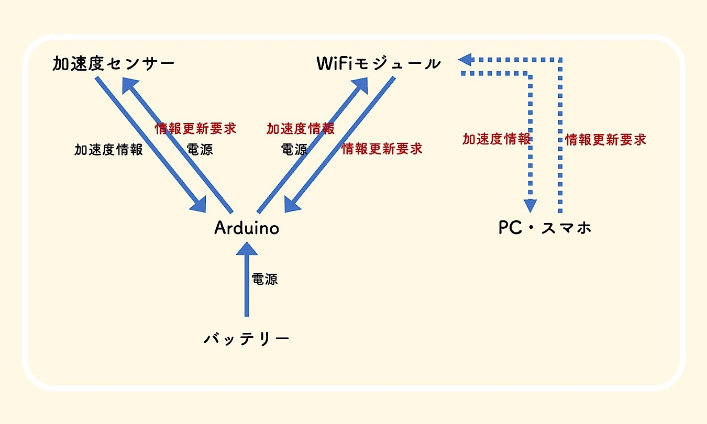
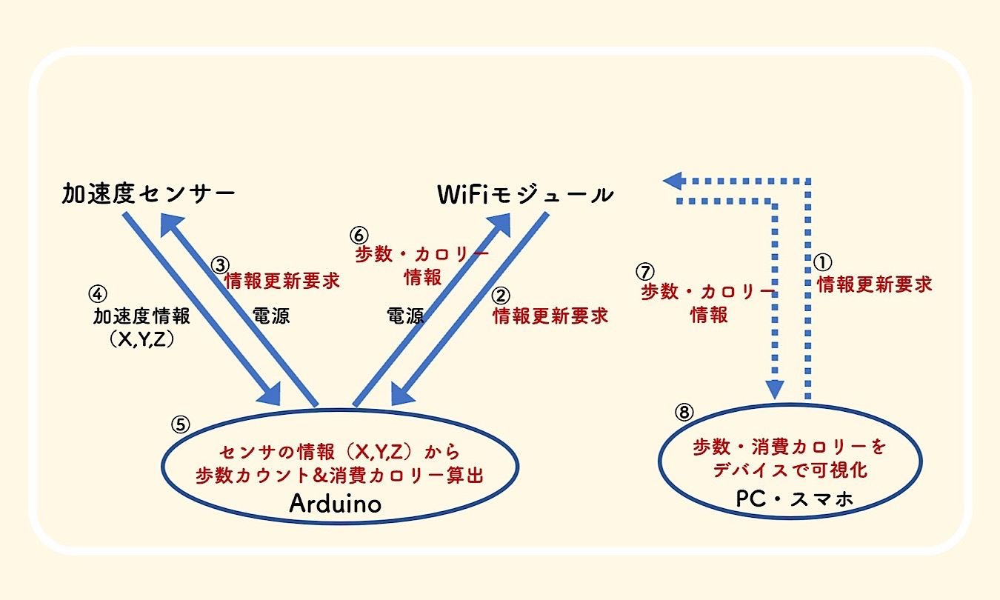

概要
プロセスメモ
■は考えないといけないこと、疑問など
●は具体的にやること
→はやったこと
構想
■階段を使うことのプラスイメージを持ってもらうにはどのようなIoTサービスが必要か（メインテーマ）
●階段使用時の消費カロリーを可視化する装置とIoTサービスを作ってみよう！
■消費カロリーを可視化するためにはどうすればいいか？
●心電モニタセンサーを使ってみても面白そう！
：心電モニタ
とセンサー合わせて7000円越え…価格面で購入を断念。(´Д⊂ヽ
●歩数から消費カロリーが求められそう：参考ページ
●加速度センサを使って歩数を計測できそう：参考ページ
■加速度センサとWiFiモジュールとArduinoを使用して、リアルタイムの消費カロリー表示ができるのでは？
●リアルタイム通信はできそう：参考ページ
→リアルタイムの消費カロリー表示をするために必要なモジュールを買ってみる
作業
＜モジュール購入編＞
■ArduinoのWiFiモジュールはESP-WROOM-02を使用した例が多かったので、ESP-WROOM-02の購入を検討
●ESP-WROOM-02単体だと、他に必要な部品や調整が多く、大変そうだった：参考ページ
→USBシリアルインターフェースやコンデンサなどがすでに繋がっているESP-WROOM-02 開発ボードを購入することにした：購入したWiFiモジュール
■加速度センサモジュールはADXL345を使用した例が多かったが、秋月電子で販売していなかった
→このページを参考に、KXR94-2050を購入することにした：購入した加速度センサモジュール
＜モジュール調整編＞
→この説明書を参考に、Wifiモジュールの初期設定を行った→このページを参考に、加速度センサモジュールとArduinoを繋ぎ、加速度情報をPCで見れるようにした。
＜モジュール接続編＞
→次に以下の画像のように加速センサモジュール、Arduino、WiFiモジュールの3つを繋げようとした
{kind=link}
→しかしながら、赤字の部分がうまくいかない...
次回目標
・Arduino内で歩数カウントと消費カロリーを算出する
・WiFiモジュールとPC（スマホ）でリアルタイムの情報交換をする
・加速度センサー、WiFiモジュール、Arduinoをまとめる箱を作る
その他
・ESP-WROOM-02 開発ボード （WiFiモジュール）・KXR94-2050 （3軸加速度センサモジュール）